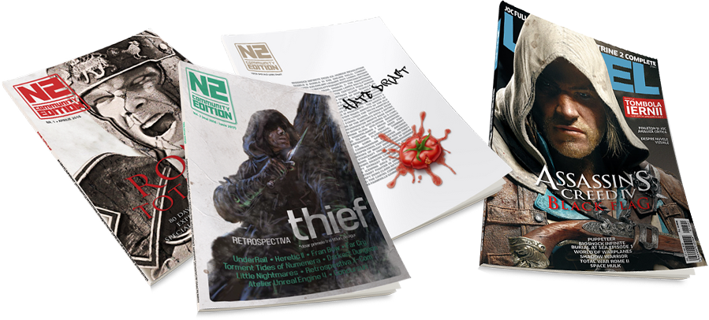

Revista
Uneori apare revista.
De-a lungul timpului, comunitatea Level nu doar a întrebat când apare revista, dar a pus și umărul la crearea unor reviste noi, precum și la păstrarea celor existente.
Astfel, mai jos veți găsi rezultatul acestor eforturilor ale comunității, materializate în câteva reviste digitale, iar pe lângă acestea veți găsi și o reconstituire a ultimului număr din Level, cel care nu a mai apărut, precum și linkuri pentru accesarea tuturor revistelor Level care au apărut.
Linkuri rapide:

Revista Comunității
Forumul nostru are (o deja îndelungată) tradiție în a scrie articole din pasiune despre jocuri și tot ce le înconjoară. Încă dinainte să existe site-ul cândaparerevista, articolele erau publicate pe forum, în secțiunea dedicată.
Ocazional, aceste articole au fost colectate în câteva reviste digitale, pe care le găsiți mai jos, disponibile pentru download, în format PDF. Numele revistei, N2 Community Edition, este dat de asocierea forumului la momentul respectiv cu revista Nivelul 2, succesoarea spirituală a revistei Level.
Deși apariția revistei este momentan în pauză, încurajăm comunitatea să scrie în continuare articole, care sunt în continuare publicate direct aici pe site. Așadar, rămâne valabilă în continuare întrebarea „când apare revista?”.
N2CE #1 (aprilie 2016)
{kind=link}
Primul număr al revistei adună primele articole scrise în cadru organizat pe forum și o primă încercare mai serioasă de a crea o revistă digitală. Conține 11 articole în 100 de pagini, plus postere și joc complet (două vechi laitmotive ale discuțiilor comunității din jurul revistelor Level).
De asemenea, fiind o revistă digitală, are și mai multe elemente interactive, precum linkuri, imagini animate și galerii interactive (dar aveți nevoie și de un PDF reader cu suport pentru Flash, precum Adobe Reader sau Foxit).


Linkuri:
N2CE SE (februarie 2017)
{kind=link}
Creat pe jumătate în glumă, acest număr nu adună articole propriu-zise, cât rant-urile participanților la ediția jocului de „Game Draft” de pe forum dedicată jocurilor care NU ne plac. O revistă la fel de atipică precum jocul pe care îl ilustrează, e mai degrabă un exercițiu de imaginație și un album de anti-review-uri (dintre care câteva au fost publicate și aici pe site).


Linkuri:
N2CE #2 (iunie 2017)
{kind=link}
Al doilea număr „oficial” al revistei, pe lângă faptul că e de două ori mai mare — 21 articole și peste 200 de pagini — a învățat din experiența trecutului și a venit cu un aspect mult mai îngrijit și fără elementele interactive ale primului număr, pentru a reduce dependența de Flash. Au rămas în schimb linkurile și imaginile interactive, posterele și jocul complet, plus un articol surpriză al lui cioLAN, concursuri și materiale extra pe „DVD”.


Linkuri:
- Download PDF N2CE #2
- Download PDF N2CE #2 mobil (dimensiune mai mică, pagini individuale, fără imagini interactive)
- Download materiale extra N2CE #2
- Thread N2CE #2 pe forum
LEVEL
Pe lângă arhiva completă a tuturor numerelor revistei Level, care au fost digitalizate mulțumită eforturilor comunității și pe care o puteți accesa pe forum sau online (plus alte informații pe wiki), găsiți mai jos și o reconstituire neoficială a ultimului număr din Level, din decembrie 2013, care, deși finalizat, n-a mai apucat să vadă lumina tiparului.
LEVEL (decembrie 2013 - ianuarie 2014) reconstituit
{kind=link}
Deși nu conține articole scrise de membrii forumului, acest număr poate fi considerat „al comunității” deoarece a fost reconstruit de un membru al comunității, din articolele publicate pe site-ul N2 și din informații obținute direct de la redactorii Level de la acea vreme, cu o grafică similară revistelor Level care au precedat-o. Nu este complet, și este doar o imagine aproximativă a ceea ce ar fi putut fi, dar, în lipsa adevăratei reviste, este cea mai bună alternativă pe care o avem.
Mai multe detalii despre reconstituire găsiți pe thread-ul dedicat de pe forum.
Linkuri: